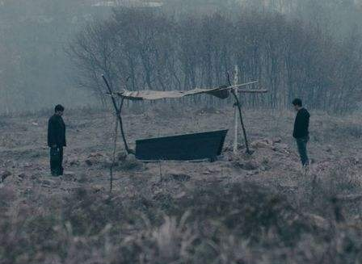
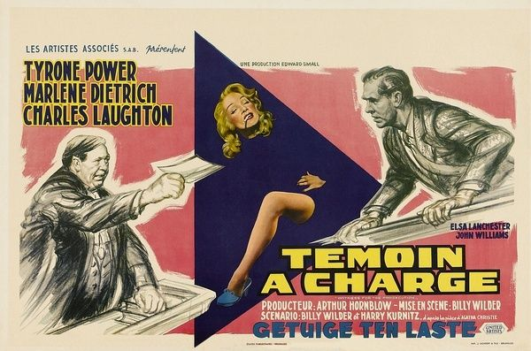
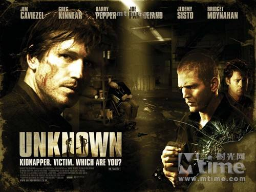
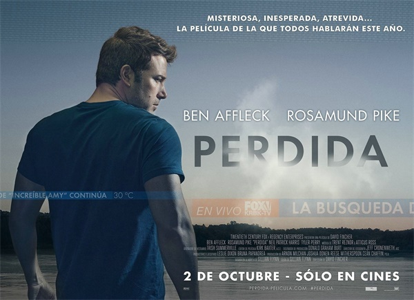

您现在的位置是：首页 > 我的影视 > 悬疑网站首页悬疑
悬疑
- 动漫
- 2000-00-00 00:00:00
- 99已阅读
- 99
致命魔术
在魔术产生盛行的维多利亚时期，出现了两位极有天赋的年轻魔术师、两个好朋友，
罗伯特·安吉尔和阿尔弗雷德·伯登。两个人因为互相嫉妒猜疑，而成了势不两立的对手，他们用各种方法来证明自己是那个时代首席魔术师。
现在就看：百度云链接 密码：06ci
心迷宫
中国某偏远村庄里，因为一具莫名出现的尸体而引发的一连串离奇怪事。

现在就看：百度云链接 密码：pu7t
暴裂无声
北方凛冽的冬天，一个牧羊少年带着自家的羊群在山里行走，路过浅浅的河沟，他停下脚步低头注目。
两天后，矿工张保民得知儿子失踪的消息，急切赶回家中，三天后，律师徐文杰的女儿失踪，他拿起电话打给他能想到的唯一嫌疑人。山林，荒野，寻找孩子的人们迷失在其中。
现在就看：百度云链接 密码：idv5
神探夏洛克
改编自阿瑟·柯南·道尔创作的侦探小说《福尔摩斯探案集》，将原著的时间背景从19世纪搬到了21世纪，
讲述在繁华热闹的伦敦大都市中，时尚的大侦探夏洛克·福尔摩斯和他的朋友约翰·H·华生经受的一系列危险的、不同寻常的历险。
现在就看：百度云链接 密码：qz3c
万能钥匙
该片讲述了护士卡罗琳去一个僻远而古旧的房子里照顾房子男主人却被卷入一连串的阴谋的故事。
现在就看：百度云链接 密码：3uts
禁闭岛
影片讲述了联邦侦探泰德·丹尼尔受命到一座岛上调查一个杀人机构，却因此遇到了重重危险和谜团的故事。
现在就看：百度云链接 密码：cxnl
控方证人
该片根据侦探小说家阿加莎·克里斯蒂的原著改编，讲述了英国刑辩律师为谋杀罪嫌疑人辩护的故事。

现在就看：百度云链接 密码：pdto
穆赫兰道
影片主要讲述了经历了一场在蜿蜒的穆赫兰道上并令其失忆的车祸后，丽塔和一个立志要做好莱坞演员的女孩围绕着洛杉矶寻找线索和答案，
随之而来的是一个扭曲的超乎梦想与现实的冒险。
现在就看：百度云链接 密码：5pcx
前目的地
影片改编自罗伯特·A·海因莱因小说《你们这些还魂尸》，讲述一个时间特工穿梭时空提前阻止犯罪的神秘组织成员，
他穷尽一生追踪一名连环爆炸犯，但最终直面对手时，真相却让他瞠目结舌。
现在就看：百度云链接 密码：ncje
蝴蝶效应
电影讲述伊万在小时候经历了一系列糟糕的事情，损坏了他原本完美的人生。
在童年可怕记忆的折磨下，伊万请求心理医生的帮助，医生鼓励他把发生的事情记下来，但是事情变得越来越糟糕。
现在就看：百度云链接 密码：srxs
嫌疑犯X的献身
该片由一宗被发现的男尸体引起，带出帝都大学物理学教授汤川学和数学天才石神哲哉之间的不断斗智斗勇的故事，并涉及了男女之间的爱情，以及惺惺相惜的友情。
现在就看：百度云链接 密码：hpqn
惊天魔盗团
影片讲述了一群高智商的窃贼，运用最尖端的技术，利用华丽的舞台作为掩护，于众目睽睽之下完成偷天换日盗窃的故事。
现在就看：百度云链接 密码：vqkj
看不见的客人
该片讲述了企业家艾德里安在事业如日中天之时被卷入一桩谋杀案中，为了洗脱罪名，他请来了金牌女律师弗吉尼亚为自己辩护。
现在就看：百度云链接 密码：w2bl
搏击俱乐部
该片讲述了生活苦闷的泰勒为了找寻刺激与好友杰克组成“搏击俱乐部”，在那里他们可以把一切不快的情绪宣泄，借着自由搏击获得片刻快感的故事。
现在就看：百度云链接 密码：aq5f
记忆碎片
《记忆碎片》以一具神秘尸体作为整部电影的线索，讲述了小律师一夜宿醉，醒来发现同伴死在柜子里后，
为了洗清嫌疑，只好使尽浑身解数，最终推理出谁是杀人凶手的故事。
现在就看：百度云链接 密码：rgf4
恐怖直播
故事聚焦首尔汉江上发生的一连串炸弹恐怖事件。广播主持尹英华在节目中接到神秘听众打来的威胁电话，尹英华意识到这个神秘听众很可能就是汉江连锁炸弹恐怖事件的元凶后，
意图将该事件制作为一档能够令自己咸鱼翻身的独家直播节目，但事件的发展却远远超出了他的想象。
现在就看：百度云链接 密码：cunl
玩命记忆
在一座停产的密闭工厂里，五个男人从昏迷中转醒，但他们却想不起来自己身为何人，又为何在这里......

现在就看：百度云链接 密码：7b3o
消失的爱人
该片讲述了主人公因一次雪崩意外痛失爱妻，凭借强烈的爱意与思念，召唤回消失爱人的灵魂，从而演绎的一段悬疑爱情故事。

现在就看：百度云链接 密码：pd7t